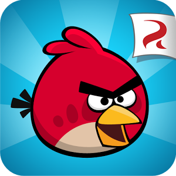

Bem-vindo à fase das montanhas!
Angry Birds, também conhecido como Angry Birds Classic, é o jogo de quebra-cabeça e estratégia que deu início a uma das maiores franquias da história dos jogos para celular.
Lançado em 2009 pela Rovio Entertainment, o jogo foi um sucesso estrondoso que salvou a empresa da falência.